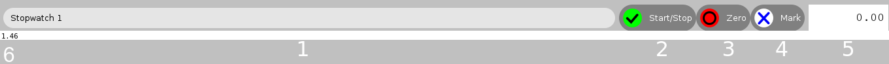

StopWatch¶
About¶
StopWatch is the quintessential stopwatch Sugar, intuitivoy well as being easy to use, supports the needs of both simple and advanced timing.Among its innovations, StopWatch offers the ability to manage multiple timers simultaneously and to make it easier to manage their watches, you can rename them all.
Where to get StopWatch¶
While the StopWatch activity does not come preinstalled on all distributions OLPC software, you can download activity from its Activity page
Using¶
Indeed, the StopWatch activity is very easy to use, but if you do not understand any of the features of this activity, the references are listed below:


Select the name of a timing to keep your work organized.
Start/Pause the timing.
Reset the timing.
Create a mark of this time(in others timers, known as “A return”).
The visor of actual time.
A list of all times you checked.